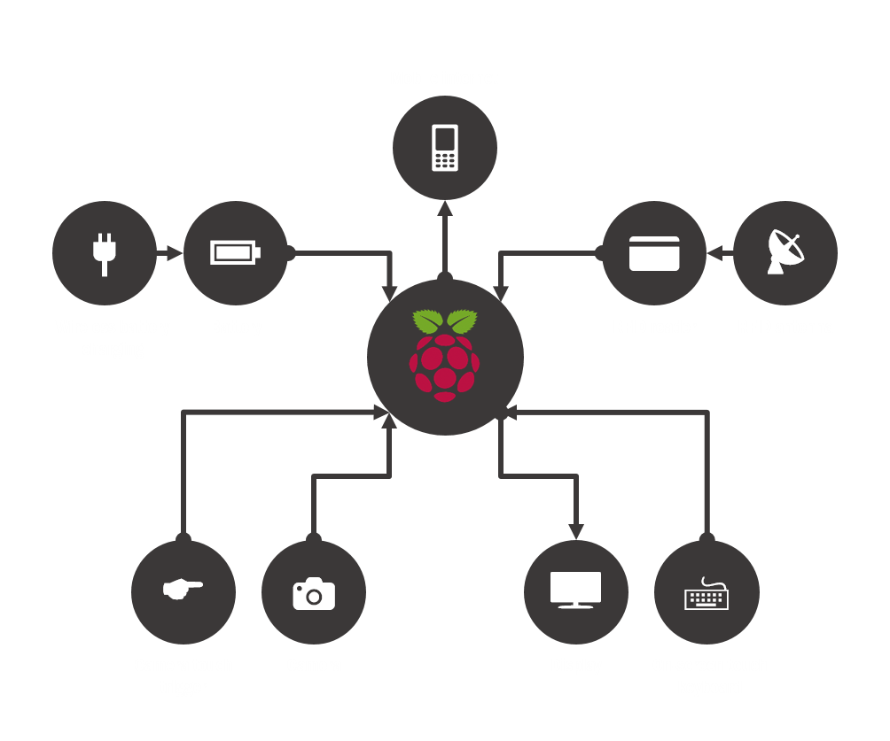

The Raspberry Pi is the heart of Alex and Sam. Everything runs from this little low-powered computer. All the other hardware components are connected to the little computer with cables.
The battery is needed to make sure everything keeps working. It works just like the battery on your phone. Alex needs to be charged regularly to make sure they work when you need them to. We've made it possible for Alex to be charged wirelessly, which means that all you have to do is make sure that they sit comfortably with the blanket fully attached to the leg (the charging station). We've put buttons in place to help you find the right place to make sure the bear is charging.
The memory card is inserted into the Pi to store all the pictures and text captured with Alex or Sam.
The internet dongle is also connected to the Pi. This little thing that looks a little like a memory stick is what allows Alex and Sam to go online. This is quite an important part of Alex and Sam, because this is the piece of hardware that makes sure that the moderated posts appear on the website!
The display is the main part that you interact with (at least from the hardware side. We hope you play and cuddle with Alex and Sam more!). It is from here that you are able to make a new task, complete a task, or moderate existing contributions to tasks.
The camera that is placed in the nose of the bears is also connected to the Pi. Although you press on the screen to take the picture, this is the part that actually captures the picture.
An RFID antenna is inside Alexs arm. RFID stands for Radio Frequency Identification Device, and although this sounds really complicated, all it really does is read a card with a chip in it. We've used this technology to allow for moderation on the stuffed animals. If you put you RFID token (that comes with the bear) on this antenna, it will take you to a new screen on the display. From here you will be able to moderate the contributions before they are uploaded to the website.
The different components are all connected via cables. The diagram below shows how all the seperate parts are connected to each other.
